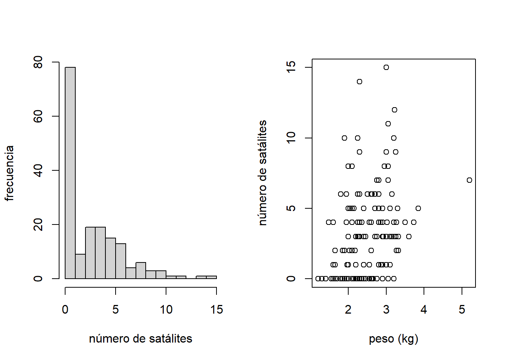
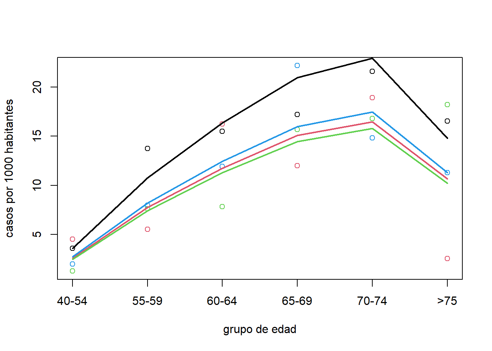
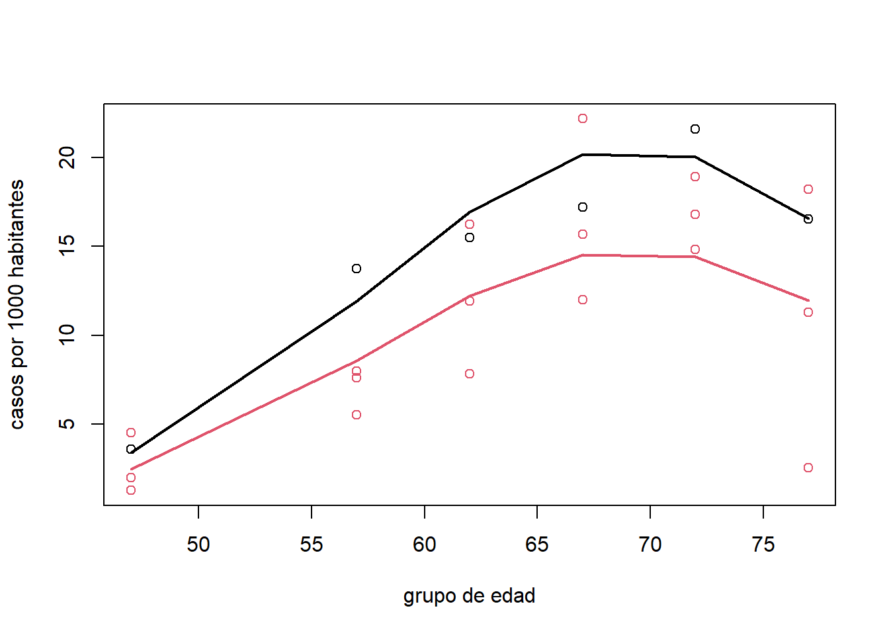

Capítulo 8 Modelo para conteos
8.1 Casos de estudio
8.1.1 Ataques de epilepsia
Ensayo clínico para evaluar el impacto de progabida sobre las crisis epilépticas (data(epilepsy) de la librería HSAUR2).
Datos:
age: edad del paciente.base: número de ataques epilépticos (x 8 semanas) antes delensayo.treatment: tratamiento (placebo, progabida).seizure.rate(variable respuesta): número de ataques epilépticos (x dos semanas) luego de 8 semanas.
8.1.2 Datos de cáncer de pulmón
Incidencia de cáncer de pulmón en cuatro ciudades de Dinamarca entre 1968 y 1971 (data(eba1977,package='ISwR')).
Variable respuesta: número de casos de cáncer de pulmón.
Covariables:
Ciudad (Fredericia, Horsens, Kolding, Vejle).
Grupo de edad (40-54, 55-59, 60-64, 65-69, 70-74, >75).
Dado que el número de casos depende del tamaño de la población, se modela la tasa de casos de cáncer de pulmón: \(Y_i/t_i\).
\(t_i\) es el tamaño de la población por grupo de edad y ciudad (offset).
Fredericia (línea negra), Horsens (línea roja), Kolding (línea verde), Vejle (línea azul).
cancer.data = eba1977[order(eba1977$city),]
# casos por 1000 habitantes
tasa = 1000*cancer.data$cases/cancer.data$pop
plot(1:6,tasa[cancer.data$city=='Fredericia'],type='b',xlab = 'grupo de edad',
ylim=range(tasa),ylab='casos por 1000 habitantes',xaxt='n',lwd=2)
axis(1,1:6,c('40-54','55-59','60-64','65-69','70-74','>75'))
lines(1:6,tasa[cancer.data$city=='Horsens'],col=2,type='b',lwd=2)
lines(1:6,tasa[cancer.data$city=='Kolding'],col=3,type='b',lwd=2)
lines(1:6,tasa[cancer.data$city=='Vejle'],col=4,type='b',lwd=2)### Número de cangrejos satélites
Los datos crabs de la librería asbio son de un estudio de hembras de cangrejos herradura durante el periodo de desove en una isla en el Golfo de México.
Variable respuesta:el número de “satélites de cangrejos” herradura hembras (\(n = 173\)). Las posibles covariables son:
color: color (1, medio-claro; 2, medio; 3, medio-oscuro; 4,oscuro).spine: condición de la espina dorsal (1, ambos bien; 2, uno gastado o roto; 3, ambos gastados o rotos).width: ancho del caparazón (cm).weight: peso (kg)
par(mfrow=c(1,2))
hist(crabs$satell,breaks = 20,main='',xlab='número de satálites',ylab='frecuencia')
plot(crabs$satell~weight,data=crabs,xlab='peso (kg)',ylab='número de satálites')
8.2 Modelo Poisson
La distribución Poisson se utiliza para modelar variables de tipo conteo (número de eventos por intervalo de tiempo o espacio).
Modelo:
\[ y_i\sim Poisson(\lambda_i), \quad i=1,...,n,\quad \text{donde} \quad \lambda_i=exp(\boldsymbol x'_i\boldsymbol \beta), \]
Por lo tanto: \(E(y_i|\boldsymbol x_i)=V(y_i|\boldsymbol x_i)=\lambda_i\).
El modelo Poisson también se puede usar como aproximación al modelo binomial cuando \(n_i\) es grande y \(\pi_i\) es pequeño, con \(\mu_i=n_i\pi_i\).
Los conteos \(y_i\) son proporcionales a un índice \(t_i\) (intervalo de tiempo, área de espacio, tamaño de población). Cuando \(t_i\) no es fijo, se debe incluir un término llamado offset.
El modelo Poisson asume que \(E(y_i|\boldsymbol x_i) = V (y_i|\boldsymbol x_i)\). En la práctica, es común encontrar que la varianza es mayor que la media que predice la Poisson (sobredispersión).
En otros casos, la frecuencia de ceros puede ser mayor de lo esperado en el modelo ajustado (exceso de ceros).
8.2.1 Modelo de conteo con offset
El valor esperado de una variable de de conteo ·\(y_i\) es proporcional a un índice \(t_i\).
Por lo que se puede modelar la tasa \((y_i/t_i)\) con valor esperado \(\lambda_i/t_i\).
En este caso, el predictor lineal queda de la forma:
\[ log\begin{pmatrix}\frac{\lambda_i}{t_i}\end{pmatrix}=\boldsymbol x'_i\boldsymbol \beta. \\ log\lambda_i=\boldsymbol x_i'\boldsymbol \beta+logt_i, \]
donde \(logt_i\) es llamado offset.
Por lo tanto, el valor esperado de \(y_i\) es:
\[ \lambda_i=t_iexp(x_i\beta). \]
8.2.1.1 Datos de cáncer de pulmón
Modelo 1:
\[ log(\mu_i/\text{pop}_i)=\beta_0+\beta_1\text{Horsens}_i+\beta_2\text{Kolding}_i+\beta_3\text{Vejle}_i+\beta_4I\text{(55-59)}_i+\beta_5I\text{(60-64)}_i+\beta_6I\text{(65-69)}_i+\beta_7I\text{(70-74)}_i+\beta_8I\text{(>75)}_i \]
poisson.model = glm(cases ~ city + age+ offset(log(pop)),
family = poisson(link = "log"), data = cancer.data)
summary(poisson.model)##
## Call:
## glm(formula = cases ~ city + age + offset(log(pop)), family = poisson(link = "log"),
## data = cancer.data)
##
## Deviance Residuals:
## Min 1Q Median 3Q Max
## -2.63573 -0.67296 -0.03436 0.37258 1.85267
##
## Coefficients:
## Estimate Std. Error z value Pr(>|z|)
## (Intercept) -5.6321 0.2003 -28.125 < 2e-16 ***
## cityHorsens -0.3301 0.1815 -1.818 0.0690 .
## cityKolding -0.3715 0.1878 -1.978 0.0479 *
## cityVejle -0.2723 0.1879 -1.450 0.1472
## age55-59 1.1010 0.2483 4.434 9.23e-06 ***
## age60-64 1.5186 0.2316 6.556 5.53e-11 ***
## age65-69 1.7677 0.2294 7.704 1.31e-14 ***
## age70-74 1.8569 0.2353 7.891 3.00e-15 ***
## age75+ 1.4197 0.2503 5.672 1.41e-08 ***
## ---
## Signif. codes: 0 '***' 0.001 '**' 0.01 '*' 0.05 '.' 0.1 ' ' 1
##
## (Dispersion parameter for poisson family taken to be 1)
##
## Null deviance: 129.908 on 23 degrees of freedom
## Residual deviance: 23.447 on 15 degrees of freedom
## AIC: 137.84
##
## Number of Fisher Scoring iterations: 5Devianza= 23:447 y AIC= 137:84.
Fredericia (línea negra), Horsens (línea roja), Kolding (línea verde), Vejle (línea azul).
### ajuste del modelo
plot(1:6,tasa[cancer.data$city=='Fredericia'],xlab = 'grupo de edad',
ylim=range(tasa),ylab='casos por 1000 habitantes',xaxt='n')
axis(1,1:6,c('40-54','55-59','60-64','65-69','70-74','>75'))
points(1:6,tasa[cancer.data$city=='Horsens'],col=2)
points(1:6,tasa[cancer.data$city=='Kolding'],col=3)
points(1:6,tasa[cancer.data$city=='Vejle'],col=4)
pred.tasa = 1000*poisson.model$fitted.values/cancer.data$pop
lines(1:6,pred.tasa[cancer.data$city=='Fredericia'],type='l',lwd=2)
lines(1:6,pred.tasa[cancer.data$city=='Horsens'],col=2,type='l',lwd=2)
lines(1:6,pred.tasa[cancer.data$city=='Kolding'],col=3,type='l',lwd=2)
lines(1:6,pred.tasa[cancer.data$city=='Vejle'],col=4,type='l',lwd=2)
Modelo 2:
\[ log(\mu_i/\text{pop}_i)=\beta_0+\beta_1\text{Fredericia}_i+\beta_2\text{edad}_i^*+\beta_3\text{edad}_i^{*2}, \]
donde \(\text{edad}_i^{*2}\) es el punto medio de los grupos de edad.
cancer.data$t = c(47,57,62,67,72,77)
cancer.data$Fredericia = as.double(cancer.data$city=='Fredericia')
poisson.model2 = glm(cases ~ Fredericia + t + I(t^2)+ offset(log(pop)),
family = poisson(link = "log"), data = cancer.data)
summary(poisson.model2)##
## Call:
## glm(formula = cases ~ Fredericia + t + I(t^2) + offset(log(pop)),
## family = poisson(link = "log"), data = cancer.data)
##
## Deviance Residuals:
## Min 1Q Median 3Q Max
## -2.91887 -0.50366 -0.04555 0.45458 1.98780
##
## Coefficients:
## Estimate Std. Error z value Pr(>|z|)
## (Intercept) -2.154e+01 2.784e+00 -7.738 1.01e-14 ***
## Fredericia 3.288e-01 1.480e-01 2.221 0.0263 *
## t 5.002e-01 9.062e-02 5.520 3.39e-08 ***
## I(t^2) -3.609e-03 7.263e-04 -4.969 6.72e-07 ***
## ---
## Signif. codes: 0 '***' 0.001 '**' 0.01 '*' 0.05 '.' 0.1 ' ' 1
##
## (Dispersion parameter for poisson family taken to be 1)
##
## Null deviance: 129.908 on 23 degrees of freedom
## Residual deviance: 25.364 on 20 degrees of freedom
## AIC: 129.75
##
## Number of Fisher Scoring iterations: 4Prueba de razón de verosimilitud:
anova(poisson.model2,poisson.model,test='LRT')## Analysis of Deviance Table
##
## Model 1: cases ~ Fredericia + t + I(t^2) + offset(log(pop))
## Model 2: cases ~ city + age + offset(log(pop))
## Resid. Df Resid. Dev Df Deviance Pr(>Chi)
## 1 20 25.364
## 2 15 23.448 5 1.9161 0.8606Fredericia (línea negra), otra ciudad (línea roja).
plot(c(47,57,62,67,72,77),tasa[cancer.data$city=='Fredericia'],xlab = 'grupo de edad',
ylim=range(tasa),ylab='casos por 1000 habitantes')
points(c(47,57,62,67,72,77),tasa[cancer.data$city=='Horsens'],col=2)
points(c(47,57,62,67,72,77),tasa[cancer.data$city=='Kolding'],col=2)
points(c(47,57,62,67,72,77),tasa[cancer.data$city=='Vejle'],col=2)
pred.tasa = 1000*poisson.model2$fitted.values/cancer.data$pop
lines(c(47,57,62,67,72,77),pred.tasa[cancer.data$city=='Fredericia'],type='l',lwd=2)
lines(c(47,57,62,67,72,77),pred.tasa[cancer.data$city=='Horsens'],col=2,type='l',lwd=2)
8.3 Distribución binomial negativa
Modelo:\(y|\lambda\sim Poisson(\lambda)\),
donde \(\lambda\sim gamma(k,\mu).\) Esto es:
\[ f(\lambda;k,\mu)=\frac{(k/\mu)^k}{\Gamma(k)}exp(-k\lambda/\mu)\lambda^{k-1}, \]
Entonces tenemos:
\[ E(\lambda)=\mu\quad\text{y}\quad V(\lambda)=\mu^2/k \]
La distribución binomial negativa (Poisson-gamma) se obtiene al marginalizar \(y\). Esto es:
\[ f(y;\mu,k)=\int f(y|\lambda)f(\lambda)d\lambda. \]
La función de densidad de la binomial negativa es:
\[ f(y;\mu,k)=\frac{\Gamma(y+k)}{\Gamma(k)\Gamma(y+1)}\begin{pmatrix} \frac{\mu}{\mu+k}\end{pmatrix}^y \begin{pmatrix} \frac{k}{\mu+k} \end{pmatrix}^k \]
para \(y=0,1,...\)
Si definimos \(\gamma=1/k\), tenemos que:
\[ E(y)=\mu\quad\text{y}\quad V(y)=\mu(1+\gamma\mu), \]
para \(\gamma>0\) (parámetro de sobredispersión).
8.3.1 Modelo binomial negativo (Poisson-gamma)
Modelo:
\[ y_i|\lambda_i\sim Poisson(\lambda_i)\\ \lambda_i\sim gamma(\mu_i,\gamma), \]
donde
\[ \lambda_i=exp(\boldsymbol x'_i\boldsymbol \beta). \]
Por lo cuál:
\[ E(y_i)=\mu_i\quad\text{y}\quad V(y_i)=\mu_i(1+\gamma\mu_i) \]
La estimación de los parámetros \((\boldsymbol \beta,\gamma)\) se hace por máxima verosimilitud.
Dado que \(\gamma>0\), el modelo binomial negativo no puede modelar datos con subdispersión.
Poisson(3) (negro) - Poisson-gamma(\(3,\gamma=0.5\)) (rojo) - Poisson-gamma(\(3,\gamma=2\)) (verde)
“Grafico comparaciones diapositiva 18”
8.3.1.1 Ataques epilépticos
epilepsy4= epilepsy[epilepsy$period==4,]
modPois = glm(seizure.rate~treatment+base,data=epilepsy4,family=poisson)
summary(modPois)##
## Call:
## glm(formula = seizure.rate ~ treatment + base, family = poisson,
## data = epilepsy4)
##
## Deviance Residuals:
## Min 1Q Median 3Q Max
## -3.1373 -1.2275 -0.0668 0.5381 4.0197
##
## Coefficients:
## Estimate Std. Error z value Pr(>|z|)
## (Intercept) 1.214772 0.085543 14.201 < 2e-16 ***
## treatmentProgabide -0.315159 0.098469 -3.201 0.00137 **
## base 0.021536 0.001039 20.733 < 2e-16 ***
## ---
## Signif. codes: 0 '***' 0.001 '**' 0.01 '*' 0.05 '.' 0.1 ' ' 1
##
## (Dispersion parameter for poisson family taken to be 1)
##
## Null deviance: 476.25 on 58 degrees of freedom
## Residual deviance: 149.68 on 56 degrees of freedom
## AIC: 343.44
##
## Number of Fisher Scoring iterations: 5#library(MASS)
modbinNeg = glm.nb(seizure.rate~treatment+base,data=epilepsy4)
summary(modbinNeg)##
## Call:
## glm.nb(formula = seizure.rate ~ treatment + base, data = epilepsy4,
## init.theta = 4.483069947, link = log)
##
## Deviance Residuals:
## Min 1Q Median 3Q Max
## -2.36228 -0.80991 0.02734 0.41451 2.55898
##
## Coefficients:
## Estimate Std. Error z value Pr(>|z|)
## (Intercept) 1.080878 0.153419 7.045 1.85e-12 ***
## treatmentProgabide -0.327892 0.168163 -1.950 0.0512 .
## base 0.025017 0.002688 9.308 < 2e-16 ***
## ---
## Signif. codes: 0 '***' 0.001 '**' 0.01 '*' 0.05 '.' 0.1 ' ' 1
##
## (Dispersion parameter for Negative Binomial(4.4831) family taken to be 1)
##
## Null deviance: 174.166 on 58 degrees of freedom
## Residual deviance: 70.124 on 56 degrees of freedom
## AIC: 313.32
##
## Number of Fisher Scoring iterations: 1
##
##
## Theta: 4.48
## Std. Err.: 1.55
##
## 2 x log-likelihood: -305.324| Modelo | Devianza | g.l. | AIC |
|---|---|---|---|
| Poisson | 149.68 | 56 | 343.44 |
| Binomial-negativa | 70.124 | 56 | 313.32 |
8.4 Modelo Poisson con ceros infiados
El modelo Poisson con ceros infiados (ZIP):
\[ y_i=\begin{cases} 0 \qquad & \text{con probabilidad}\quad 1-\phi_i \\ Poisson(\lambda_i) \quad & \text{con probabilidad}\quad \phi_i\end{cases} \]
La distribución de probabilidad incondicional es:
\[ P(y_i=0)=(1-\phi_i)+\phi_iexp(-\lambda_i) \]
\[ P(y_i=j)=\phi_i\frac{exp(-\lambda_i)\lambda_i^j}{j!},\quad \text{para}\quad j=1,2,... \]
Los parámetros \(\phi_i\) y \(\lambda_i\) pueden ser modelados a través de covariables:
\[ logit\phi_i=\boldsymbol x'_{1i}\boldsymbol \beta_1 \quad\text{y}\quad log\log\lambda_i\boldsymbol x'_{2i}\boldsymbol \beta_2 \]
Poisson(3) (negro) - ZI-Poisson(\(3,\phi=0.9\))(rojo) - Poisson-gamma(\(3,\phi=0.7\))(verde)
“grafica diapositiva 21”
El valor esperado y varianza de \(y_i\) son:
\[ E(y_i)=\phi_i\lambda_i\quad\text{y}\quad V(y_i)=\phi_i\lambda_i[1+(1-\phi_i)\lambda_i]. \]
Dado que \(E(y_i)<V(y_i)\) el modelo ZIP tiene en cuenta algo de sobredispersión.
En presencia de una sobredispersión mayor, el modelo de ceros inflados puede combinarse con una distribución binomial negativa. Esto es:
\[ y_i=\begin{cases} 0 & \text{con probabilidad} \quad1-\phi_i \\ \text{binomial negativa}(\lambda_i,\gamma)& \text{con probabilidad} \quad\phi_i \end{cases} \]
8.5 Modelo Hurdle
El modelo Hurdle:
\[ P(Y_i=j)=\begin{cases} 1-\pi_i & \text{si}\quad j=0,\\ \pi_i\frac{f(j;\mu_i)}{1-f(0;\mu_i)} &\text{si}\quad j=1,2,... \end{cases} \]
La función \(f(\cdot;\mu_i)\) puede ser una Poisson o binomial negativa.
\(\pi_i\) se puede modelar usando un modelo logístico y un modelo log-lineal para \(\mu_i\):
\[ logit\phi_i=\boldsymbol x'_{1i}\boldsymbol \beta_1\quad\text{y}\quad log\lambda_i=\boldsymbol x'_{2i}\boldsymbol \beta_2. \]
8.5.1 Número de cangrejos satélites
# modelo Poisson
Pois.sat = glm(satell~weight,data = crabs,family = poisson)
summary(Pois.sat)##
## Call:
## glm(formula = satell ~ weight, family = poisson, data = crabs)
##
## Deviance Residuals:
## Min 1Q Median 3Q Max
## -2.9307 -1.9981 -0.5627 0.9298 4.9992
##
## Coefficients:
## Estimate Std. Error z value Pr(>|z|)
## (Intercept) -0.42841 0.17893 -2.394 0.0167 *
## weight 0.58930 0.06502 9.064 <2e-16 ***
## ---
## Signif. codes: 0 '***' 0.001 '**' 0.01 '*' 0.05 '.' 0.1 ' ' 1
##
## (Dispersion parameter for poisson family taken to be 1)
##
## Null deviance: 632.79 on 172 degrees of freedom
## Residual deviance: 560.87 on 171 degrees of freedom
## AIC: 920.16
##
## Number of Fisher Scoring iterations: 5# modelo binomial negativo
NB.sat = glm.nb(satell~weight,data=crabs)
summary(NB.sat)##
## Call:
## glm.nb(formula = satell ~ weight, data = crabs, init.theta = 0.9310592338,
## link = log)
##
## Deviance Residuals:
## Min 1Q Median 3Q Max
## -1.8394 -1.4122 -0.3247 0.4744 2.1279
##
## Coefficients:
## Estimate Std. Error z value Pr(>|z|)
## (Intercept) -0.8647 0.4048 -2.136 0.0327 *
## weight 0.7603 0.1578 4.817 1.45e-06 ***
## ---
## Signif. codes: 0 '***' 0.001 '**' 0.01 '*' 0.05 '.' 0.1 ' ' 1
##
## (Dispersion parameter for Negative Binomial(0.9311) family taken to be 1)
##
## Null deviance: 216.43 on 172 degrees of freedom
## Residual deviance: 196.16 on 171 degrees of freedom
## AIC: 754.64
##
## Number of Fisher Scoring iterations: 1
##
##
## Theta: 0.931
## Std. Err.: 0.168
##
## 2 x log-likelihood: -748.644#library(pscl)
# modelo de inflación de cero
ZINB.sat1 = zeroinfl(satell~weight | weight,data=crabs,dist='negbin')
summary(ZINB.sat1)##
## Call:
## zeroinfl(formula = satell ~ weight | weight, data = crabs, dist = "negbin")
##
## Pearson residuals:
## Min 1Q Median 3Q Max
## -1.3647 -0.7899 -0.3112 0.5086 3.8908
##
## Count model coefficients (negbin with log link):
## Estimate Std. Error z value Pr(>|z|)
## (Intercept) 0.8979 0.3053 2.941 0.00327 **
## weight 0.2171 0.1119 1.941 0.05229 .
## Log(theta) 1.6013 0.3553 4.507 6.57e-06 ***
##
## Zero-inflation model coefficients (binomial with logit link):
## Estimate Std. Error z value Pr(>|z|)
## (Intercept) 3.7565 0.9841 3.817 0.000135 ***
## weight -1.9131 0.4322 -4.426 9.59e-06 ***
## ---
## Signif. codes: 0 '***' 0.001 '**' 0.01 '*' 0.05 '.' 0.1 ' ' 1
##
## Theta = 4.9595
## Number of iterations in BFGS optimization: 8
## Log-likelihood: -352.8 on 5 Df# modelo hurdle
HNB.sat = hurdle(satell~weight | weight,data=crabs,dist='negbin')
summary(HNB.sat)##
## Call:
## hurdle(formula = satell ~ weight | weight, data = crabs, dist = "negbin")
##
## Pearson residuals:
## Min 1Q Median 3Q Max
## -1.3768 -0.7890 -0.3133 0.5121 3.8869
##
## Count model coefficients (truncated negbin with log link):
## Estimate Std. Error z value Pr(>|z|)
## (Intercept) 0.9131 0.3088 2.957 0.00311 **
## weight 0.2104 0.1136 1.852 0.06399 .
## Log(theta) 1.5782 0.3593 4.392 1.12e-05 ***
## Zero hurdle model coefficients (binomial with logit link):
## Estimate Std. Error z value Pr(>|z|)
## (Intercept) -3.6947 0.8802 -4.198 2.70e-05 ***
## weight 1.8151 0.3767 4.819 1.45e-06 ***
## ---
## Signif. codes: 0 '***' 0.001 '**' 0.01 '*' 0.05 '.' 0.1 ' ' 1
##
## Theta: count = 4.8462
## Number of iterations in BFGS optimization: 15
## Log-likelihood: -352.6 on 5 Df| P | NB | ZINB | HNB | |
|---|---|---|---|---|
| AIC | 920.1 | 754.6 | 715.5 | 715.3 |
| BIC | 876.9 | 764.1 | 731.3 | 731.0 |